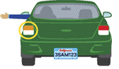
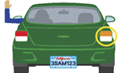
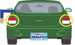

Your health may affect your driving.
Vision – You must be able to notice hazards in different types of lighting, judge distances, adjust to traffic speed, and read road signs.
Hearing – You must be able to hear horns, sirens, motorcycles, or screeching tires that may alert you of hazards. It is illegal to wear a headset or earplugs in both ears while driving.
Fatigue and Drowsiness – Can affect your vision and increase reaction time to hazards.
Physical and Mental – You must be alert to quickly decide the correct course of action in any type of traffic situation, including unexpected ones.
Medications – Prescription and over-the-counter medications can make you an unsafe driver. Some medicines can make you sleepy. It is your responsibility to know the effects of the medications you take.
Health – Physicians are required to report patients, who are at least 14 years old, to DMV for medical conditions that may affect your ability to drive safely, such as lapse of consciousness.
Controlling the Vehicle
To control your vehicle, it is critical to keep both hands on the wheel whenever possible.
Hand-to-Hand Steering (Push/Pull)
To use this steering wheel method:
- Start with your hands at 9 and 3 o’clock or 8 and 4 o’clock.
- Do not cross your hands over the middle of the steering wheel.
- Keep your hands in these positions, even when making turns.
Hand-Over-Hand Steering
Use this steering wheel method when you turn at low speeds, park, or need to recover from a skid. To use this method:
- Start with your hands at 8 and 4 o’clock.
- Reach across the steering wheel to grasp the opposite side.
- Let go of the steering wheel with your other hand.
- Reach across the arm still holding the wheel, grip the wheel, and pull up.
One-Hand Steering
There are only two situations that may require steering with one hand:
- When you are turning while backing up to see where you are going behind you. Place your hand at the 12 o’clock position on the steering wheel.
- When you are operating vehicle controls that require you to remove a hand from the steering wheel.
Signals, Horns, And Headlights
Your signals, horn, and headlights are important for communicating with other drivers, pedestrians, and bicyclists.
Signaling
Always signal when you turn, change lanes, slow down, or stop.
You can signal using your vehicle’s signal lights or using hand-and-arm positions. If your signal lights are not functioning, or bright sunlight makes your signal lights hard to see, use the hand-and-arm signals shown in the image below.
| LEFT TURN | RIGHT TURN | SLOW OR STOP |
|---|---|---|
 |
 |
 |
Bicyclists may signal a turn with their arm held straight out, pointing in the direction they plan to turn.
You should signal:
- At least 100 feet before you turn.
- Before every lane change.
- At least five seconds before you change lanes on a freeway.
- Before pulling next to the curb or away from the curb.
- Even when you do not see other vehicles around you.
- When you are almost through the intersection if you plan to turn shortly after crossing the intersection.
Remember to turn off your signal when you no longer need it.
Using Your Horn
Use your vehicle’s horn to let other drivers know you are there or warn others of a hazard. Use your horn to:
- Avoid collisions.
- Alert oncoming traffic on narrow mountain roads where you cannot see at least 200 feet ahead.
Using Your Headlights
Your vehicle’s headlights help you see what is in front of you. They also make it easier for other drivers to see your vehicle. Dim your high-beam headlights to low beams within 500 feet of a vehicle coming toward you or within 300 feet of a vehicle you are following. It is illegal to drive using only parking lights. Use your headlights:
- When it is too dark to see from 1,000 feet away.
- Beginning 30 minutes after sunset.
- Until 30 minutes before sunrise.
- In adverse weather. If you need to use your windshield wipers due to fog, rain, or snow, you must turn on your low-beam headlights.
- When conditions (such as clouds, dust, smoke, or fog) prevent you from seeing other vehicles.
- On mountain roads and tunnels (even on sunny days).
- When a road sign states that headlights must be on.
- To help other drivers see your vehicle, especially when the sun is low on the horizon.
Using Your Emergency Flashers
If you can see a collision or hazard ahead, warn drivers behind you using these methods:
- Turn on your emergency flashers.
- Lightly tap your brake pedal three or four times.
- Use a hand signal when slowing and stopping.
If you need to stop because of vehicle trouble:
- Turn on your emergency flashers. If your vehicle does not have emergency flashers, use your turn signals.
- If possible, pull off the road away from all traffic.
- If you cannot get completely off the road, stop where people can see you and your vehicle from behind.
- Do not stop just over a hill or just around a curve. Other drivers may not see your vehicle in time to avoid a collision.
- Call for emergency roadside assistance and stay in your vehicle until help arrives.